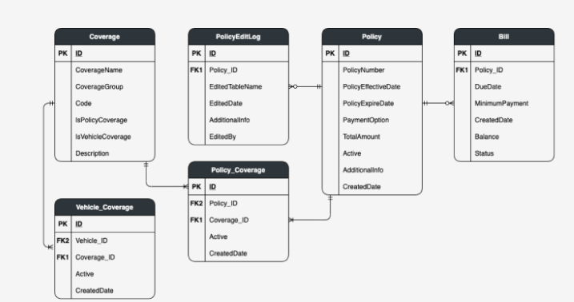

Mis on ERD diagramm?
ERD ehk Entity Relationship Diagram on diagramm, mida kasutatakse andmebaasi struktuuri planeerimiseks ja kirjeldamiseks. ERD näitab olemeid, nende atribuute ja seoseid teiste olemitega.
Kus ERD diagramme kasutatakse?
- andmebaaside planeerimisel
- SQL tabelite loomisel
- infosüsteemide arendamisel
- andmete omavaheliste seoste kirjeldamisel
- backend süsteemide kavandamisel
ERD ühenduselemendid
One-to-One ehk 1 : 1
Üks kirje ühes tabelis on seotud ainult ühe kirjega teises tabelis. Näiteks ühel inimesel võib olla üks ID-kaart.
One-to-Many ehk 1 : N
Üks kirje ühes tabelis võib olla seotud mitme kirjega teises tabelis. Näiteks ühel kliendil võib olla mitu tellimust.
Many-to-Many ehk M : N
Mitu kirjet ühes tabelis võivad olla seotud mitme kirjega teises tabelis. Näiteks õpilane võib osaleda mitmel kursusel ja kursusel võib olla mitu õpilast. Selle jaoks kasutatakse tavaliselt vahetabelit.
Otsade tähendused
- | tähendab üks
- O tähendab null või valikuline
- < tähendab mitu
Olemitabel
Olemitabel kujutab ERD diagrammis ühte tabelit või objekti. Olemitabelis näidatakse tavaliselt tabeli nimi ja selle väljad.
Olemitabelis peab olema:
- olemi ehk tabeli nimi
- vähemalt üks atribuut
- Primary Key ehk primaarvõti
Olemitabelis võib olla:
- Foreign Key
- andmetüübid
- unikaalsuse piirangud
- nullable info
- vaikimisi väärtused
Võtmed ERD diagrammis
Primary Key
Primary Key ehk primaarvõti on väli, mis tuvastab iga tabelirea unikaalselt. Näiteks tabelis Klient võib primaarvõti olla klient_id.
Foreign Key
Foreign Key ehk võõrvõti on väli, mis viitab teise tabeli Primary Key väärtusele. Näiteks Tellimus tabelis võib klient_id viidata Klient tabeli klient_id väljale.
Composite Key
Composite Key ehk liitvõti koosneb mitmest väljast. Seda kasutatakse näiteks vahetabelites, kus üks väli üksi ei ole piisav unikaalse rea tuvastamiseks.
Key
Key on üldnimetus väljale või väljade kogumile, mida kasutatakse andmete tuvastamiseks, sidumiseks või otsimiseks.
Kuidas võtmeid olemitabelitega kasutatakse?
ERD diagrammis kasutatakse Primary Key ja Foreign Key välju selleks, et näidata tabelitevahelisi seoseid. Primary Key asub põhitabelis ja Foreign Key asub tabelis, mis sellele viitab.
Selles näites on Klient tabelis klient_id primaarvõti. Tellimus tabelis on klient_id võõrvõti, sest see viitab Klient tabelile.
Näidis ERD
